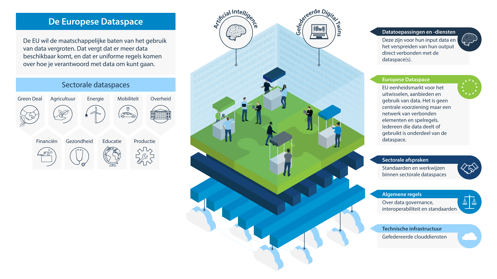
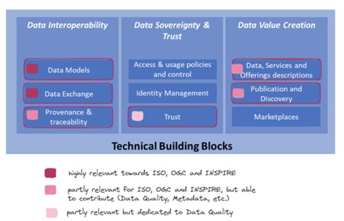

Dit is een werkversie die op elk moment kan worden gewijzigd, verwijderd of vervangen door andere documenten. Het is geen stabiel document.
1. Europese Data Strategie
Dit onderdeel is niet normatief.
De Europese Data Strategie , begin 2020 voorgesteld, streeft naar een eenheidsmarkt voor de beschikbaarheid en het gebruik van data. De strategie is daarbij gericht op het wereldwijd concurrentievermogen van Europa en op datasoevereiniteit. Technisch wordt naar een pan-Europese dataspace (dataruimte) gestreefd om te zorgen dat er meer data beschikbaar komt voor socio-economisch gebruik, terwijl bedrijven en individuen die data genereren er wel zeggenschap over blijven houden. Die pan-Europese dataspace wordt opgebouwd met meerdere sectorale data spaces waarbinnen afspraken worden gemaakt over de omgang met data. Samen vormt dit de Europese binnenmarkt voor data (EU Single Market for Data). In de Commissieperiode 2024-2029 wordt dit verder versterkt en verdiept tot een Europese Data Unie.
Binnen de Europese Data Strategie spelen drie juridische bouwstenen een rol:
de Data Governance Act (DGA, Data governance verordening)
de Data Act (DA, Data verordening)
de Open Data Directive (ODD, Open Data Richtlijn) met daarin opgenomen de High Value Data lijst
Verder wordt er geld beschikbaar gesteld om de benodigde infrastructuur, o.a. gefedereerde cloud-diensten te realiseren, en maatregelen getroffen om die cloud-diensten veilig, toegankelijk en competitief te houden.
De Europese Data Strategie bevat veel elementen die rechtstreeks voor datahouders in publiek relevante domeinen van belang zijn.
1.1 De Data Governance act
De Data Governance act regelt het hergebruik van overheidsdata die niet onder de Open Data Directive valt. Daarvoor worden voorwaarden gesteld aan datadeeldiensten en daar wordt toezicht op uitgeoefend. Dit betreft overheidsgegevens waarop commerciële of statistische vertrouwelijkheid rust, persoonsgegevens die niet binnen de Open Data Richtlijn vallen, en gegevens waarvoor intellectueel eigendom van derden van toepassing is.
Voorwaarden die veilig gebruik en eerlijke toegang regelen zijn van toepassing. Het is mogelijk om kosten in rekening te brengen voor hergebruik, maar daaraan zijn voorwaarden t.a.v. transparantie en uitlegbaarheid verbonden. Lidstaten dienen een of meer bevoegde organisaties aan te wijzen die de overheidsdatahouders ondersteunt t.a.v. techniek, verantwoord datagebruik, en het verwerken van aanvragen voor gebruik. Zie voor verdere uitleg Data Governance Act
De European Data Innovation Board (EDIB) adviseert over de werkwijzen in het kader van deze wet, standaarden, en interoperabiliteit (zie ook de Data Act), en let op de internationale samenwerking tussen nationaal aangewezen bevoegde organisaties. De EDIB is samengesteld uit vertegenwoordigers van de Lidstaten, een aantal andere (Europese) overheidsentiteiten en een groep experts.
1.2 Data Act
De Data Act is bedoeld om meer data, in handen van bedrijven of gegenereerd door producten of diensten, onder eerlijke en uniforme regels beschikbaar te krijgen voor (her)gebruik.
De Data Act geeft een reeks essentiële vereisten om interoperabiliteit mogelijk te maken tussen data spaces en data verwerkende diensten. Zo moeten data inhoud, structuur, licenties, verzamelmethode, kwaliteit en onzekerheden gedocumenteerd zijn, evenals data structuren, formaten, classificaties, API beschrijvingen etc. De EC kan verdere regels stellen t.a.v. interoperabiliteit, ook voor bepaalde sectoren. De EC kan standaarden vereisen, en (internationale) standaarden adopteren en verplicht stellen, niet alleen t.a.v. data maar ook bijvoorbeeld t.a.v. architectuur, technische standaarden en federatie van clouddiensten t.b.v. de Europese dataspace(s). De regels streven interoperabiliteit en portabiliteit na op zowel transport, syntactisch, semantisch, beleid en gedragsniveau. (Dit sluit aan op de Europese standaardisatiestrategie die niet alleen over digitale zaken gaat.)
Zie voor verdere uitleg Data Act
1.3 Open Data Directive
De Open Data Directive formuleert hoe overheden open data beschikbaar moeten stellen (zowel na een aanvraag als bij pro-actieve publicatie). Beschikbaar te stellen data moet waar mogelijk digitaal in open en machine-leesbare formaten samen met hun metadata toegankelijk, vindbaar en herbruikbaar worden gemaakt. In voorkomende gevallen volstaan ook bestaande formaten (as-is). De Open Data Directive geeft de EC de mogelijkheid met een Uitvoeringsverordening open data verplichtingen op te leggen aan alle Lidstaten tegelijkertijd (dus zonder omzetting in nationale wetgeving). Zo'n uitvoeringsverordening vermeldt hoe en onder welke voorwaarden de verplichte open data moet worden gepubliceerd, en verstrekt. De EU High Value Data is zo'n uitvoeringsverordening. De uitvoeringsverordening bepaalt in haar bijlage (Annex I) welke overheidsdata verplicht als open data moet worden gepubliceerd. Voor die datasets bepaalt de wet de eisen die worden gesteld aan publicatie en gebruik van die datasets, waaronder de minimumvereisten aan ontsluiting via een API. Het staat landen vrij verder te gaan dan de implementatiewet voorschrijf, en t.a.v. de hoeveelheid data worden landen daartoe ook expliciet aangemoedigd. Unie of nationale wettelijke vereisten die verder gaan blijven onverminderd van kracht.
Zie voor verdere uitleg Open data directive
1.4 Standaardisatie
De Data Governance en Data verordeningen bevatten stukken die normalisatie vergen of expliciet om standaarden vragen.
De EC heeft een concept standaardisatie verzoek neergelegd bij CEN-CENELEC m.b.t. data spaces, data governance en cloud en edge. Dit is vooral een accent op de Data verordening maar ook de implementatie van de Data Governance verordening wordt met dit verzoek ondersteund. Verschillende elementen komen hierin samen / worden geadresseerd:
Artikel 30, technische aspecten van het overstappen van dataplatform/intermediair
Artikel 33, eisen inzake interoperabiliteit van gegevens, van mechanismen en diensten voor datadelen, en gemeenschappelijke Europese data spaces
Artikel 35, interoperabiliteit voor dataverwerkingsdiensten
Artikel 36, eisen m.b.t. slimme contracten voor het uitvoeren van gegevensdelingsovereenkomsten.
2. European Data Spaces (Dataruimten)
Er wordt een 'eenheidsmarkt voor data' gecreëerd, die vorm krijgt in de vorm van een EU-brede data space (dataruimte). De EU-brede data space is waar alle aspecten uit de hiervoor genoemde Verordeningen tot praktische uitdrukking komen. Het is niet een vraag of je als data-gebruikende of data-delende deel wilt nemen aan de EU dataspace. De EU-brede dataspace is de omgeving waarin je data-gebruik en -delen plaatsvindt, binnen de randvoorwaarden en afspraken die voor die marktomgeving gelden. Met de EU data space wordt het bestaande vrije verkeer van personen, goederen en kapitaal aangevuld met het vrije verkeer van data.
Binnen zo'n data space moet het mogelijk zijn voor iedereen deel te nemen aan het delen, uitwisselen, en gebruiken van data. Ook als het gaat om data die je niet rechtstreeks kunt krijgen, worden er mogelijkheden voorzien om die data wel te kunnen gebruiken. Denk hier o.a. de overheidsdata die binnen de Data Governance Act (DGA) valt, maar niet onder de Open Data Directive (en dus het openbaarheidsregime van de betreffende lidstaat). Zoals bijvoorbeeld het gebruiken van microdata van het CBS om een model te trainen zonder zelf over die microdata te hoeven beschikken, door het model naar de data te brengen.
Wat een data space precies is en hoe het zal worden, krijgt middels een geleidelijk ontstaansproces vorm, waarbij bestaande en nieuwe elementen worden gefedereerd en verbonden. Op basis van bestaande beschrijvingen is een dataspace opgebouwd uit:
een technische infrastructuur die voor iedereen toegankelijk is en veilige uitwisseling en gebruik mogelijk maakt. Dit is voorzien als een gefedereerde cloud-omgeving (hier is een relatie met bijvoorbeeld Gaia-X [^1]).
gereedschappen voor gebruik en delen
generieke data governance afspraken en standaarden, waarin de Data Innovation Board uit de Data Governance Act (DGA) een rol speelt, en sectorale governance afspraken die gangbaar zijn binnen een toepassingsgebied
heldere gebruikscondities (deels nader uitgewerkt in de komende Data Act)
T.a.v. de generieke aspecten van een dataspace publiceren we de Verkenning dataspaces.
De manier waarop de EC de eenheidsmarkt voor data wil vormen, is middels sectorale data spaces, die vervolgens onderling interoperabel zijn.
Binnen sectoren en thema's zijn er vaak meer al geldende afspraken t.a.v. standaarden en professionele normen t.a.v. omgang met data, die telkens gebaseerd zijn op de context van die sector. Een data space bouwt daar dan op voort, zowel om dubbel werk te voorkomen als om de vorming van dataspaces te versnellen.

Ook wordt gesproken over de 'persoonlijke data space', die het mogelijk maakt om als individu of organisatie gegevens voor een specifiek gebruiksgeval (tijdelijk) in te brengen. (Een voorbeeld zou kunnen zijn, dat je je eigen mobiliteitsgegevens meeneemt naar een discussie over een nieuwe busroute of rondweg in je wijk). Vanuit een persoonlijke data space kan ook het in de Data Governance Act (DGA) genoemde 'data-altruïsme' worden vormgegeven. Data-altruïsme is het beschikbaar stellen van gegevens voor algemeen nut aan een beherende erkende organisatie die toeziet op het juiste gebruik van die gegevens.
Meer details over de sectorale dataspaces zijn te vinden in het hoofdstuk Uitwerking van de Dataspaces. Voor generieke informatie over zichtbare algemene data space initiatieven zie ook de Verkenning dataspaces.
Open data, zoals de High Value Data lijst uit de Open Data Directive, en bronnen als INSPIRE voeden de data space.
[^1]: GAIA-X is een project om een efficiënte en concurrerende, veilige en betrouwbare data-infrastructuur voor de Europese Unie te ontwikkelen. Het is een Frans-Duits initiatief met een Europese dimensie, gesteund door 22 bedrijven. Het project werd officieel gelanceerd op 4 juni 2020.
3. Samenhang datastelsels
[Samenhang datastelsels en standaarden.png](media/Samenhang datastelsels en standaarden.png)
4. Open Geospatial Consortium
Het Open Geospatial Consortium (OGC) is een internationale non-profit organisatie die is opgericht om interoperabiliteit voor geografische gegevensverwerking te bevorderen, door ontwikkeling van open en uitbreidbare standaarden voor interfaces en data uitwisseling voor GIS en andere technologieën. Leden (ruim 400) van het OGC zijn zowel overheidsinstellingen als de industrie en onderwijsinstellingen. Het OGC ontwikkelt specificaties die bij voldoende volwassenheid worden aangeboden aan ISO/TC 211. OGC ontwikkelt deze specificaties door veelvuldig gebruik te maken van jaarlijkse grote testbeds. OGC ontwikkelt vooral technische implementatie standaarden gerelateerd aan services.
Het OGC bestaat al meer dan 30 jaar en heeft belangrijke basisstandaarden geleverd voor de NGII en INSPIRE.
Aan welke standaarden het OGC werkt, wordt bepaald door de leden, die dat doen op basis van hun behoeften. Het OGC zelf stuurt hier niet strategisch op maar faciliteert de leden. De huidige focus van OGC ligt vooral op
Verdere ontwikkeling van de OGC API standaarden. De verwachting is dat het merendeel hiervan in de loop van 2025 klaar zal zijn;
Cloud-native geostandaarden. Verschillende generieke cloud native bestandsformaten, die zijn ontworpen om zeer grote bestanden efficient en bruikbaar te kunnen publiceren, zijn of worden door OGC geadopteerd als OGC Community standard: Cloud Optimized GeoTIFF (COG) voor raster, GeoParquet voor vector, GeoZarr voor multidimensionele data. Vanuit Nederlandse OGC leden is aangegeven dat hier veel interesse voor is, maar tegelijk is er ook groeiende huiver om afhankelijk te worden van (Amerikaanse) cloud.
AI, met name wat betreft metadata voor AI. OGC heeft al een standaard om de datasets waarmee AI getraind worden te metadateren, en gaat nu ook werken aan een standaard om de AI modellen zelf te metadateren.
Integrity, provenance and trust oftewel integriteit, herleidbaarheid en vertrouwen. Dit is een belangrijk thema dit jaar bij OGC. Duidelijk is al dat voor Provenance de W3C PROV-o standard (en dan vooral de ontologie) de grote gemene deler is. Geonovum werkt in het project Logboek dataverwerkingen ook met een mapping naar deze standaard.
En verder:
OGC werkt aan een aantal ontologieën (dwz kennismodellen, in RDF uitgedrukt): CityRDF, GeoDCAT, SOSA/SSN, GeoSPARQL, een CRS ontologie, en mogelijk ook aan een Records ontologie die OGC API Records, GeoDCAT en STAC aan elkaar gaat verbinden. Deels komt dit werk uit Europese projecten. De aandacht verschuift momenteel naar harmonisatie tussen zulke ontologieën. Vanuit het OGC wordt betoogd om zulke mappings als first class citizens te behandelen: maak ze FAIR, publiceer ze, beheer ze etc. Dit resoneert met het idee van Governance op het snijvlak vanuit DiSGeo, een paper van CROW over dit onderwerp, mappings die in IMX een belangrijke rol spelen, en activiteit rond hergebruik van elkaars begrippen binnen de NL-SBB community.
OGC werkt daarnaast aan het automatisch genereren van ontologieën. Deels omdat er vraag naar zulke ontologieën is, niet zozeer in de geo wereld zelf maar wel bv binnen Symbolic AI en in aanpalende domeinen; en deels omdat je een informatiemodel dat in RDF is uitgedrukt beter kunt beheren, waarbij veel te automatiseren is: je kunt regels uitdrukken en valideren, voorbeelden genereren en valideren, profielen uitdrukken, afhankelijkheden tussen standaarden uitdrukken, mappings maken etc. OGC heeft een knowledge graph waar al hun standaarden in beschreven staan.
OGC heeft ook gedachtengoed over samenhang van metadata. De idee leeft dat je APIs zou moeten verbinden aan schema's, en de schema's verbinden aan bijbehorende semantiek. Het OGC wil dit ook gaan realiseren in hun standaardendocumentatie. In feite een feature type catalog. Hoe bouw je die op, op een technisch neutrale manier. En in het verlengde daarvan: hoe hangen OGC API Records, GeoDCAT, STAC en informatiemodel etc met elkaar samen.
Vanuit Nederlandse OGC leden is aangegeven dat er behoefte is aan standaarden voor point clouds. Bij OGC ligt al een voorstel ter goedkeuring om LAZ te standaardiseren, echter zou dan COPC ook een goede kandidaat zijn voor standaardisatie; verder is er behoefte aan een standaard voor panoramabeelden en oblique beelden.
Ook interessant en wel strategisch vanuit OGC is dat ze hun ledenaantal in Afrika en Zuid-Amerika actief aan het uitbouwen zijn. Tot nu toe was het vooral Noord-Amerika, Europa en Azië; waarbij de deelname vanuit Noord-Amerika momenteel wat af lijkt te zwakken.
Op strategisch niveau is het daarnaast belangrijk om op te merken dat het OGC uitgaat van algemene IT standaarden. Uitgangspunt is om bestaande IT standaarden over te nemen, aangevuld met eventueel een best practice, profiel en/of extensie vanuit OGC; en alleen vanuit OGC iets nieuws te maken als er nog geen generieke standaard is. Dit principe is mede ontstaan vanuit de Spatial Data on the Web best practices die OGC samen met W3C heeft geschreven (gepubliceerd in 2016). Het principe is bijvoorbeeld toegepast bij de OGC API standaarden die gebaseerd zijn op HTTP en REST, maar ook bij GeoPackage (gebaseerd op SQLLite) en de al genoemde cloudnative geostandaarden. Het is een belangrijk punt omdat de moderne generatie OGC standaarden daardoor ook goed passen in algemene digitale architecturen.
OGC probeert ook een vinger aan de pols te houden bij Europese dataspace ontwikkelingen, maar geeft aan dat dit niet eenvoudig is. Het gaat om een grote hoeveelheid projecten waar dingen gebeuren. De meeste dataspaces hebben een raakvlak met geo-informatie. OGC probeert IDSA te bewegen OGC standaarden en methoden te gebruiken (profiles, extensions, how to use building blocks etc). Het idee van een location data space is niet handig in de visie van OGC, want grote kans dat dit genegeerd zal worden. Het is zaak om geospatial te injecteren in dataspaces, niet een geo dataspace ernaast te ontwikkelen.
5. World Wide Web Consortium (W3C)
Het W3C ontwikkelt de standaarden voor het web zoals het OGC dat doet voor geo. Het internet is een prachtig instrument om digitale informatie op te delen en het Web is in feite ene wereldwijd, op standaarden gebaseerd open platform. Die kracht van het web willen we ook graag benutten om geo-informatie beter toegankelijk te maken. Andersom is "locatie" vaak een verbindend element voor verschillende datasets. En dat maakt "geo" zeer interessant voor de webwereld.
Het W3C heeft onlangs een nieuwe visie gepubliceerd.
Standaarden van het W3C zijn vaak heel technisch en de toepasbaarheid ervan in de geowereld wordt vaak pas na enige tijd duidelijk.
Mogelijk relevant:
standaarden voor webtoegankelijkheid - daar moeten we aan voldoen bij publicatie op het web
DCAT: wordt momenteel verder doorontwikkeld
Decentralized Identifiers: kan een rol spelen in datakluizen en dataspaces
Federated Identity: idem
Verifiable credentials: idem
GPU for the Web + web assembly: kan interessant zijn voor grote (3D) geotoepassingen op het web
Immersive web: AR/VR
JSON-LD: om semantiek aan geodata in json te koppelen
RDF-star: om metadata aan gegevens te koppelen (op individueel gegeven niveau), interessant voor bv provenance
spatial data on the web werkgroep: ontwikkelt SOSA/SSN, CRS ontologie, en werkt samen met OGC aan GeoDCAT en GeoSPARQL
web application security, web authentication: interessant voor API Design rules, authenticatie/authorisatie
web machine learning
web of things: mogelijk relevant voor sensordata, maar adoptie lijkt vooralsnog laag
6. ISO TC211
ISO is de Internationale Standaardisatie Organisatie is een samenwerkingsverband van nationale standaardisatieorganisaties in 170+ landen. ISO is een NGO met de hoofdzetel in Geneve. Financiering van ISO is via bijdragen van de deelnemende landen en via de verkoop van standaarden. Voor deelname en ISO standaarden ontwikkeling en stemmingen op standaarden moet je lid zijn van de bij ISO aangesloten nationale standaardisatie organisatie. Voor Nederland is dat de NEN. De ISO is opgedeeld in meer dan 300 Technische Commissies (TC) die allen een afgebakend standaardisatiedomein hebben. Voorbeeld daarvan zijn Transportcontainers, Gasturbines, Tandheelkunde, Creatief Digitaal Design, Risico beheersing, Geo-informatie/geomatics.
ISO/TC211 Geo-informatie/geomatics heeft als toepassingsgebied: standaardisatie op het gebied van digitale geografische informatie. Binnen dit toepassinggebied kunnen deze standaarden methoden, hulpmiddelen en diensten voor gegevensbeheer specificeren. Gegevensbeheer omvat het verkrijgen, verwerken, analyseren, openen, presenteren en publiceren van geografische gegevens voor gebruikers en systemen. Belangrijk is de koppeling aan beschikbare standaarden uit de algemene informatietechnologie.
TC 211 heeft 100 standaarden gepubliceerd en 30 in ontwikkeling.
6.1 Visie en strategie.
De visie van TC 211 is:
ISO/TC 211 wil een duurzaam welvarende toekomst ondersteunen door, in samenwerking met
anderen, een reeks normen te bieden die een beter beheer van geografische informatie mogelijk maken.
6.2 Doel van geo-standaarden.
Geografische informatiestandaarden vormen de basis voor het delen van gegevens en interoperabiliteit, en vormen een fundament voor andere domeinen die een digitale representatie van de wereld nodig hebben. Voor zover mogelijk bouwen geo-informatie-standaarden voort op standaarden uit IT en andere domeinen die niet specifiek geografisch van aard zijn.
Interoperabiliteitsdomeinen voor TC211 zijn:
data en metadata (semantiek);
codering (syntaxis), en
toegang en verwerking (services – op het web bekend als APIs)
6.3 Schets van ontwikkeling gebruik en rol van geo-informatie.
Webgebaseerde distributie van geo-informatie blijft zich ontwikkelen, sensoren en burgers zijn continu verbonden en leveren gegevens. Gegevens worden steeds gedetailleerder, actueler en direct toegankelijk. Automatische verwerking van gestandaardiseerde gegevens maakt het mogelijk om meer bruikbare informatie en kennis te verstrekken. Geo-informatie wordt steeds vaker ingebed in andere domeinsystemen, zoals intelligent transport, bouw, stadsbeheer en risicobeheerssystemen. Het concept en operationalisering van 'digitale tweeling' wordt meer en meer toegepast om digitale kopieën op bijvoorbeeld stedelijk niveau van infrastructuur-, transport- en stadsbeheermodellen verrijkt met live of bijna live sensor- en crowdsource gegevens. Door standaarden te gebruiken worden deze informatiestromen geïntegreerd.
De toekomstige richting zal gaan richting toepassen van algoritmen, AI en deep learning-systemen om het operationele beheer van slimme steden en andere dynamische omgevingen met veel ruimtelijke gegevens te ondersteunen. Geo-informatie-standaardisatie maakt een ruimtelijke basis (locatie) mogelijk waarop geïntegreerde kennissystemen kunnen worden ontwikkeld. In alle gevallen wordt het delen van gegevens vrijwel uitsluitend via het web uitgevoerd. Gegevens met ruimtelijke informatie worden gemaakt en gepubliceerd door personen of organisaties met weinig of geen achtergrond in geo-informatie. Het is daarom belangrijk dat ISO/TC 211 voortbouwt op bestaande standaarden voor IT, ethiek, privacy, bruikbaarheid en andere domeinen.
Externe trends maken dat ISO/TC 211 de volgende richtingen in standaardisatie nastreeft:
streven naar standaarden die gemakkelijker te implementeren zijn, bijvoorbeeld eenvoudigere datamodellen, modulaire standaarden met een eenvoudige kern en optionele uitbreidingen;
nieuwe en opkomende metadatastandaarden overwegen die eenvoudigere datamodellen hebben;
duidelijker gebruik maken van huidige IT-standaarden en -benaderingen, zoals OpenAPI, gegevens in JSON-formaat en semantische context met behulp van bijvoorbeeld JSON-LD.
6.4 ISO/TC211 visie op geo-standaarden en EU Data Spaces.
In het rapport ISO/TC211 report from AHG Input to EU Data Spaces geeft ISO/TC 211 haar visie op de ruimtelijke dimensie in de EU Data Spaces en de geo-informatiestandaarden, architecturen en software componenten die deze standaarden gebruiken. Doel van dat document is om het belang van de ruimtelijke component en gerelateerde standaarden te onderschrijven en onder de aandacht van het EU programma te brengen.
De opkomst van nieuwe gegevensbronnen zoals internet of things, web API standaarden en, in het algemeen, nieuwe architecturen zoals cloud/edge, nieuwe software componenten en geavanceerde technologieën algoritmen en kunstmatige intelligentie hebben de context waarin interoperabele gegevensuitwisseling plaatsvindt, drastisch veranderd.
Zowel OGC als ISO/TC 211 spelen een cruciale rol in het geo-standaardisatie domein. Ze bieden uitgebreide sets standaarden die interoperabiliteit ondersteunen en een breed scala aan ruimtelijke data (space) toepassingen en diensten mogelijk maken.
ISO/TC211 en OGC standaarden en INSPIRE zullen een belangrijke rol spelen in de ontwikkeling van Data Spaces. ISO-standaarden bieden een wereldwijd coherent raamwerk voor het delen van data, terwijl INSPIRE een implementatiekader biedt voor ruimtelijk databeheer als infrastructuur in Europa. Het Open Geospatial Consortium (OGC) biedt een reeks API's die klaar zijn om te worden gebruikt om services voor Data Spaces te bouwen en te implementeren. OGC API's zijn ontworpen om interoperabel en gestandaardiseerd te zijn, wat ze zeer geschikt maakt voor de ontwikkeling van Data Spaces die data kunnen delen over verschillende platforms en applicaties. Deze standaarden bieden een raamwerk en aanbevelingen voor een interoperabel geo-datalandschap dat de ontwikkeling van Data Spaces kan ondersteunen.
High-Value Datasets.
De EU-Open Data Directive identificeert een aantal zogenaamde High Value Datasets. De categorieën HVD's omvatten o.a. locatie basisgegevens, aardobservatie en milieu, meteorologische, statistieken, bedrijven en bedrijfseigendom, en mobiliteitsgegevens. De belangrijkste technische vereisten voor HVD's zijn:
Machine leesbare formaten: HVD's moeten worden geleverd in formaten die machineleesbaar en goed gedocumenteerd zijn.
Gestandaardiseerde gegevensstructuren: De gegevens moeten voldoen aan gemeenschappelijke normen en structuren om consistentie en interoperabiliteit tussen verschillende systemen en toepassingen te waarborgen.
Beschikbaarheid via API's: HVD's moeten toegankelijk zijn via Application Programming Interfaces (API's), die directe en efficiënte toegang tot de gegevens mogelijk maken.
Open licenties: De gegevens moeten worden verstrekt onder de CC BY 4.0-licentie (of minder beperkend) die hergebruik en herdistributie toestaat.
Vrije toegang: In overeenstemming met de richtlijn moeten deze datasets gratis beschikbaar zijn om de toegankelijkheid en het gebruik ervan te maximaliseren.
Gegevensbeveiliging en privacy: Naleving van de regelgeving inzake gegevensbescherming, met name voor datasets die gevoelige of persoonlijke informatie kunnen bevatten.
Het volgende figuur geeft de technische bouwblokken weer waarop een data space gebaseerd is. Daarop geprojecteerd de relevantie voor ISO/TC211, OGC en Inspire.

Figuur 1Technische bouwblokken van een data space en relevantie voor geo-standaarden
In het genoemde rapport wordt gedetailleerd ingegaan op de verschillende bouwblokken en hoe geo-standaarden daar een rol in spelen.
7. Visie
De NGII wordt doorontwikkeld en uitgebreid tot een volwassen infractructuur die het fundament biedt voor Dataspaces en Digital Twins. De focus van de NGII wordt verbreed van alleen publiek gebruik naar ook semi-publiek en privaat en moet aansluiten op het federatief datastelsel.
De standaarden voor de data spaces gaan over de eerste twee stappen van de datawaardeketen: het inwinnen en delen van data. De digitale tweeling standaarden gaan over de laatste twee stappen, de analyse en visualisatie.
Zit de NGII hier nog onder of wordt de NGII vervangen door deze twee?
Er zijn heel veel kaders, maar die schrijven geen concrete standaarden voor. (of wel?)
Ontwikkelingen
Het is belangrijk om aan te sluiten op de FDS; dit betekent dat wij moeten zorgen dat geo-standaarden gebaseerd zijn op algemene IT standaarden.
Nieuw aspect aan data spaces is vooral het uitwisselen tussen partijen van gesloten data; hier zijn nieuwe standaarden voor nodig. Wij moeten zorgen dat geo-standaarden in combinatie met deze nieuwe standaarden kunnen werken.
Met de komst van data spaces, digitale tweelingen en AI (met name machine learning) worden ook nieuwe aspecten van metadata relevant. Dit moeten we duidelijk krijgen en verwerken in onze standaarden.
Met de komst van digitale tweelingen willen we nu ook rekenmodellen als databron beschouwen en deze vindbaar maken en op een interoperabele manier kunnen benaderen; we moeten zorgen voor de juiste standaarden hiervoor.
Verder is het in digitale tweelingen vooral een kwestie van implementatie en adoptie van bestaande standaarden. Hieraan moeten we bijdragen.
Strategische keuzes
enerzijds standaardisatie in Europa proberen te beïnvloeden, zodat we de geo-standaarden kunnen blijven gebruiken; en
tegelijk de standaardenontwikkeling bij OGC beïnvloeden zodat OGC standaarden ook goed werken in combinatie met Europese standaarden voor dataspaces